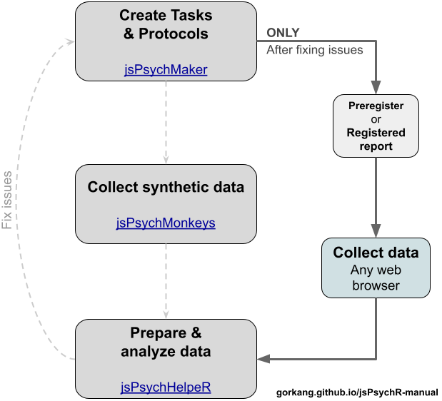

jsPsychR manual
2022-07-12
Chapter 1 What is jsPsychR?
jsPsychR is a group of tools to help create experimental paradigms with jsPsych, simulate participants and standardize the data preparation and analysis.
We have three main tools:
jsPsychMaker: Create experiments with jsPsych, randomize participants balance between conditions, etc.
jsPsychMonkeys: Release monkeys to a jsPsych experiment using the R package {targets}, docker and {RSelenium}.
jsPsychHelpeR: Standardize and automatize data preparation and analysis of jsPsych experiments created with jsPsychMaker.

Contributors